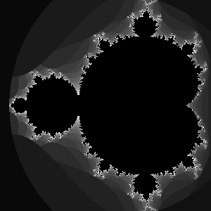

TPJ One-Liner #7An Absurd Way To Convert From Decimal To Binary
#!/usr/bin/perl
($decimal, $binary) = (shift, '');
$SIG(USR1) = sub { $binary .= "0"};
$SIG(USR2) = sub { $binary .= "1"};
do { kill $decimal & 1 ? 'USR2' : 'USR1' , $$;
$decimal >>= 1;
} while ($decimal);
print scalar reverse $binary;
Courtesy of Nathan Torkington |
TPJ One-Liner #8How To Patch Your Netscape Binary To Enable Strong Encryption#!/usr/bin/perl -0777pi s/TS:.*?\0/$_=$&;y,a-z, ,;s, $,true,gm;s, 512,2048,;$_/es Courtesy of Ian Goldberg. |
TPJ One-Liner #9How To Use The Perl Debugger as a Command-Line Interpreterperl -de 0 |
TPJ One-Liner #10Using PDL to Generate Fractals

use PDL; use PDL::IO::Pic;$a=zeroes 300,300;
$r=$a->xlinvals(-1.5,0.5);$i=$a->ylinvals(-1,1);
$t=$r;$u=$i;for(1..30){$q=$r**2-$i**2+$t;$h=2*$r*$i+
$u;$d=$r**2+$i**2;$a=lclip($a,$_*($d>2.0)*($a==0));($r,
$i)=map{$_->clip(-5,5)}($q,$h);}$a->wpic("mandel.gif");
Courtesy of Tuomas J.Lukka. |